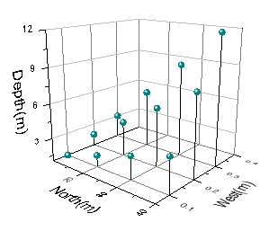
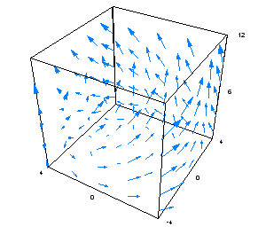

Weitere relevante Videos: Sich überschneidende Oberflächendiagramme aus Arbeitsblättern erstellen und Transparenz festlegen
Weitere relevante Videos: Sich überschneidende Oberflächendiagramme aus Arbeitsblättern erstellen und Transparenz festlegen
 Weitere relevante Videos: Sich überschneidende Oberflächendiagramme aus Arbeitsblättern erstellen und Transparenz festlegen
Weitere relevante Videos: Sich überschneidende Oberflächendiagramme aus Arbeitsblättern erstellen und Transparenz festlegen
Dreidimensionale Diagramme verfügen über einen vielseitigen Anwendungsbereich in Wissenschaft, Ingenieurwesen und Finanzen. Origin umfasst eine Vielzahl von 3D-Diagrammtypen, einschließlich 3D-Punkt-, 3D-Balken- und 3D-Oberflächendiagramme. Mit Origin können Sie diese Diagramme schnell und einfach erstellen: Wählen Sie einfach Ihre Daten aus und klicken Sie auf die Schaltfläche oder den Menübefehl mit dem gewünschten Diagramm. Sobald es erstellt ist, können Sie das Diagramm modifizieren und bearbeiten, es u.a. drehen, seine Größe verändern, die Überschneidung von mehreren Oberflächen zeichnen, die Anzeige der Achsenbeschriftung ändern etc. Sie können 3D-Diagramme grafisch drehen und in der Größe verändern oder genaue Zahlenangaben in Textfelder machen. Sie können im Allgemeinen das Aussehen eines Grafikelements verändern, indem Sie durch einen Doppelklick darauf den Dialog aufrufen, in dem Sie die Einstellungen bearbeiten. Im Folgenden sehen Sie drei Beispiele für 3D-Diagramme:
|

3D-Punktdiagramm aus Matrix mit Achsentitel und Hilfsstrichsbeschriftungen "in 3D-Ebene" |

|

|
Origin unterstützt OpenGL für alle 3D-Diagramme. Unten sehen Sie die Mindestsystemanforderungen für Origin, um ein OpenGL-Diagramm zu zeichnen, insbesondere die Anforderungen an Grafikkarte und Treiber:
Große Datensätze, zusätzliche Empfehlungen: Für Anwender, die mit sehr großen Datensätzen arbeiten (z. B. Importieren von Textdateien mit einer Größe von 10 MB oder größer), empfiehlt OriginLab außerdem Folgendes.
|
|
Seit Version 2017 können Sie 2D-Text- und Zeichenobjekte plus Tabellen, Bilder, Blasenskalen und OLE-Objekte in Origins 3D-openGL-Diagramme einfügen. |
Die Diagrammtypen sind unten zusammen mit den Datenformaten, die zum Erstellen der verschiedenen Diagramme verwendet werden können, aufgeführt. Informationen zur Definition einer virtuellen Matrix finden Sie unter 3D- und Konturdiagramme aus einer virtuellen Matrix erstellen.
| Diagrammtyp | XYZ-Spalten im Arbeitsblatt | XYY-Spalten im Arbeitsblatt | Matrixfenster | Virtuelle Matrix im Arbeitsblatt |
|---|---|---|---|---|
|
Ja
(Ternäres 3D-Oberflächendiagramm mit Farbabbildung benötigen XYZZ-Spalten) |
Nein | Ja | Ja |
|
Ja | Nein | Ja | Nein |
|
Ja | Nein | Nein | Nein |
|
Nein | Ja | Nein | Nein |
|
Nein | Nein | Ja | Ja |
|
Nein | Nein | Ja | Nein |
| Hinweis: Ein Algorithmus zur Konturtriangulation, der X- und Y-Rohdaten zeichnet, wurde für Origin 2016 implementiert. Vorgängerversionen führten eine Normierung der X- und Y-Daten vor dem Zeichnen durch. Daher können sich Kontur- und 3D-Oberflächendiagramme aus XYZ-Arbeitsblattdaten, die mit Version 2016 oder höher erstellt wurden, von Diagrammen der gleichen Daten, die mit älteren Versionen erstellt wurden, unterscheiden. Die Änderung wird am deutlichsten, wenn es große Unterschiede im Skalierungsbereich zwischen X- und Y-Werten gibt. Weitere Informationen finden Sie unter FAQ-822. |
Um ein 3D-Diagramm aus Matrix- oder Arbeitsblattdaten zu erstellen, markieren Sie die Daten und klicken Sie auf die entsprechende Diagrammschaltfläche auf der Symbolleiste 3D- und Konturdiagramme. Alternativ wählen Sie ein Diagramm im Menü Zeichnen. Um ein Diagramm aus einer virtuellen Matrix zu erstellen, müssen Sie auf die Diagrammschaltfläche der Symbolleiste 3D- und Konturdiagramme klicken, um einen Dialog aufzurufen, mit dem Sie die XYZ-Daten festlegen und dann das Diagramm erstellen können. Weitere Einzelheiten zum Erstellen von Diagrammen aus virtuellen Matrizen finden Sie unter 3D- und Konturdiagramme aus virtuellen Matrizen erstellen. Jeder 3D-Diagrammtyp wurde im Einzelnen im Appendix 2 - Diagrammtypen vorgestellt. Weitere Details können Sie dort finden.
Die benutzerdefinierte Anpassung von 3D-Diagrammen findet hauptsächlich in den Dialogen Achsen und Details Zeichnung statt. Weitere Einzelheiten zum Dialog Achsen und zum benutzerdefinierten Anpassen von Diagrammachsen erfahren Sie unter Diagrammachsen. Weitere Einzelheiten zum Dialog Details Zeichnung finden Sie unter Diagramm benutzerdefiniert anpassen.